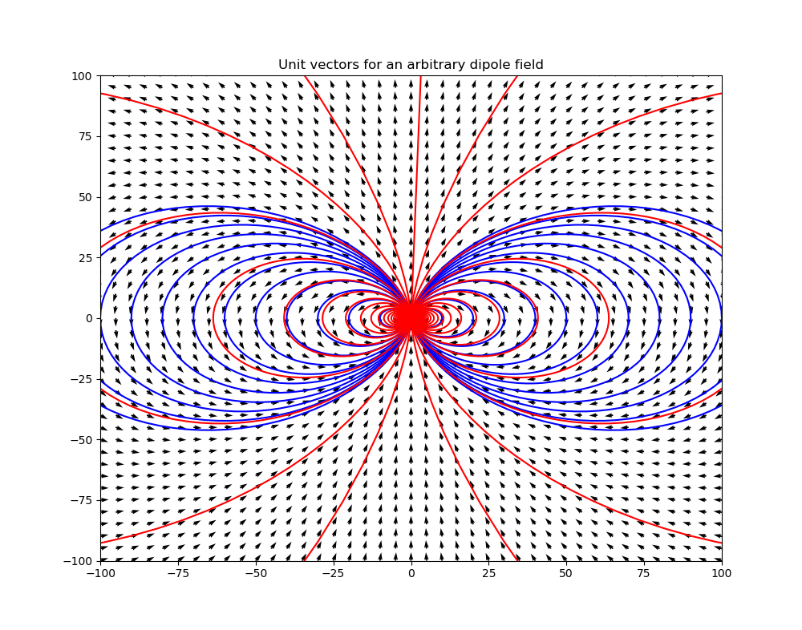
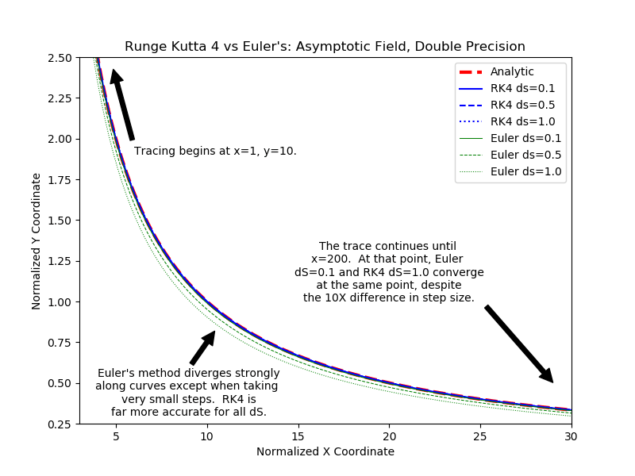
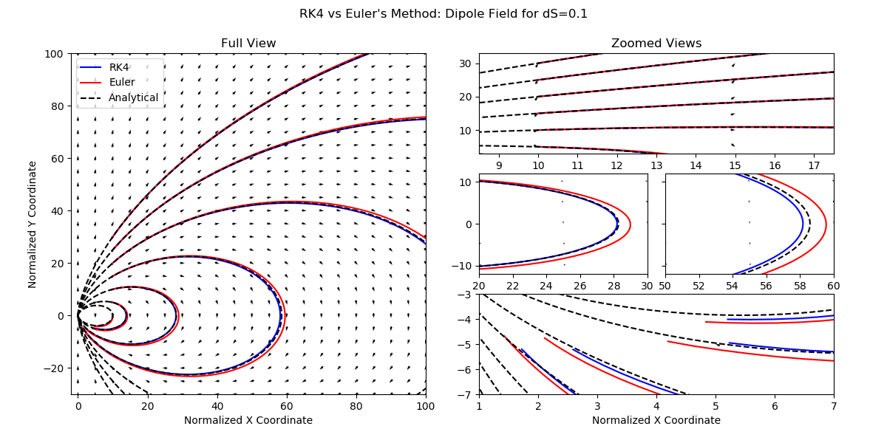
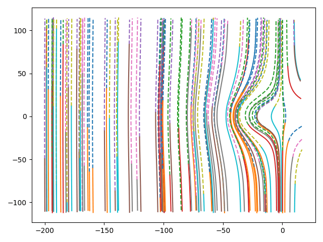

Examples
IDL format output processing
The data loader examples are in SWMF.jl. You can use all the functions in SWMF.jl by, e.g., VisAna.readdata, or you can just import the SWMF.jl package.
A general plotdata function is provided for quick visualizations. In addition to that, some plotting functions can be directly called as shown below, which allows for more control by the user.
- 1D binary
plotdata(data, "p", plotmode="line")
plotdata(data, "p", plotmode="linegrid")- 2D Cartesian (structured)
plotdata(data, "p bx;by", plotmode="contbar streamover")
plotdata(data, "p bx;by", plotmode="contbar quiverover")
plotdata(data, "p bx;by", plotmode="contbar streamover", density=2.0)
plotdata(data, "p", plotmode="grid")
plotdata(data, "p", plotmode="contbar", plotrange=[-50., 50., -1., 1.])
plotdata(data, "p", plotmode="contbar")
plotdata(data, "p", plotmode="contbarlog")
plotdata(data, "p", plotmode="surfbar")- 2D unstructured
plotdata(data, "rho", plotmode="contbar")
plotdata(data, "rho", plotmode="trimesh")
plotdata(data, "rho", plotmode="tricont")- 2D structured spherical coordinates
plotdata(data, "rho", plotmode="contbar")- 3D box
plotdata(data, "bx", plotmode="contbar", cut="y", cutPlaneIndex=1, level=20)
plotdata(data, "bx", plotmode="contbar", cut="y", plotrange=[-1.4,-1.1,0.70,0.78])
using PyPlot
plt.axis("scaled")
subplot(2,2,(1,3))
cutplot(data, "Ex", cut='y', cutPlaneIndex=128, plotrange=plotrange)Multiple dispatch for matplotlib functions
- line plot
plot(data, "p", linewidth=2, color="green")
c = plot(data, "p")
plt.setp(c, linestyle="--", linewidth=2);- scatter plot
scatter(data, "p")- contour
# 2D contour
contour(data, "p")- filled contour
contourf(data, "p")
contourf(data, "p", levels, plotrange=[-10,10,-Inf,Inf], plotinterval=0.1)- surface plot
plot_surface(data, "p")- triangle surface plot
plot_trisurf(data, "p")- triangle filled contour plot
tricontourf(data, "p")- streamline
streamplot(data, "bx;bz")
streamplot(data, "bx;bz", density=2.0, color="k", plotinterval=1.0, plotrange=[-10,10,-Inf,Inf])Streamline tracing
The built-in streamplot function in Matplotlib is not satisfactory for accurately tracing streamlines. Instead in VisAna we have native support field tracer.
dipole.jl is used for analytically generate a dipole field:
test_dipole()which will show the following figure

Tracing along an asymptotic line
test_trace_asymptote()in turn gives 
Tracing lines in a dipole field
test_trace_dipole()in turn gives 
Currently the tracing only works on a uniform structured grid.
An example of tracing in a 2D cut and plot the field lines over contour:
using VisAna, PyPlot
filename = "y=0_var_1_t00000000_n00000000.out"
data = VisAna.readdata(filename,dir="test")
bx = data.w[:,:,5]
bz = data.w[:,:,7]
x = data.x[:,1,1]
z = data.x[1,:,2]
seeds = select_seeds(x,z; nSeed=100) # randomly select the seeding points
for i = 1:size(seeds)[2]
xs = seeds[1,i]
zs = seeds[2,i]
# Tracing in both direction. Check the document for more options.
x1, z1 = trace2d_eul(bx, bz, xs, zs, x, z, ds=0.1, maxstep=1000, gridType="ndgrid")
plot(x1,z1,"--")
end
axis("equal")which will display 
Currently the select_seeds function uses pseudo random number generator that produces the same seeds every time.
Space data analysis
In the space folder, you can find scripts for comparing magnetic field with observations, cross polar cap potential analysis, diamagnetic current calculation, 1D data frequency analysis, minimum variance analysis, particle phase space distribution plots, cut plots near the X-line reconnection site, and static satellite analysis.